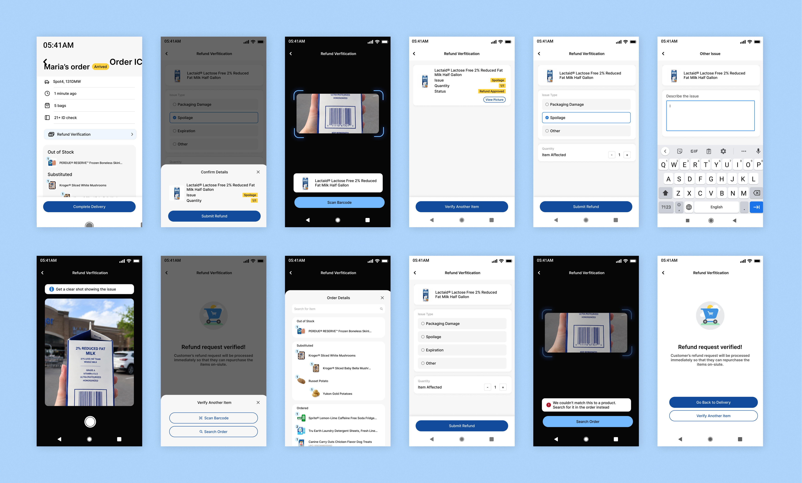
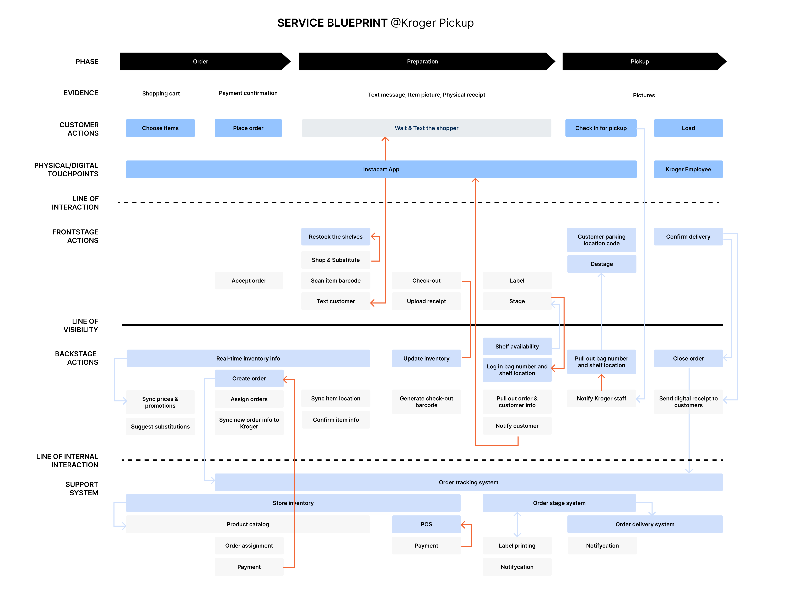
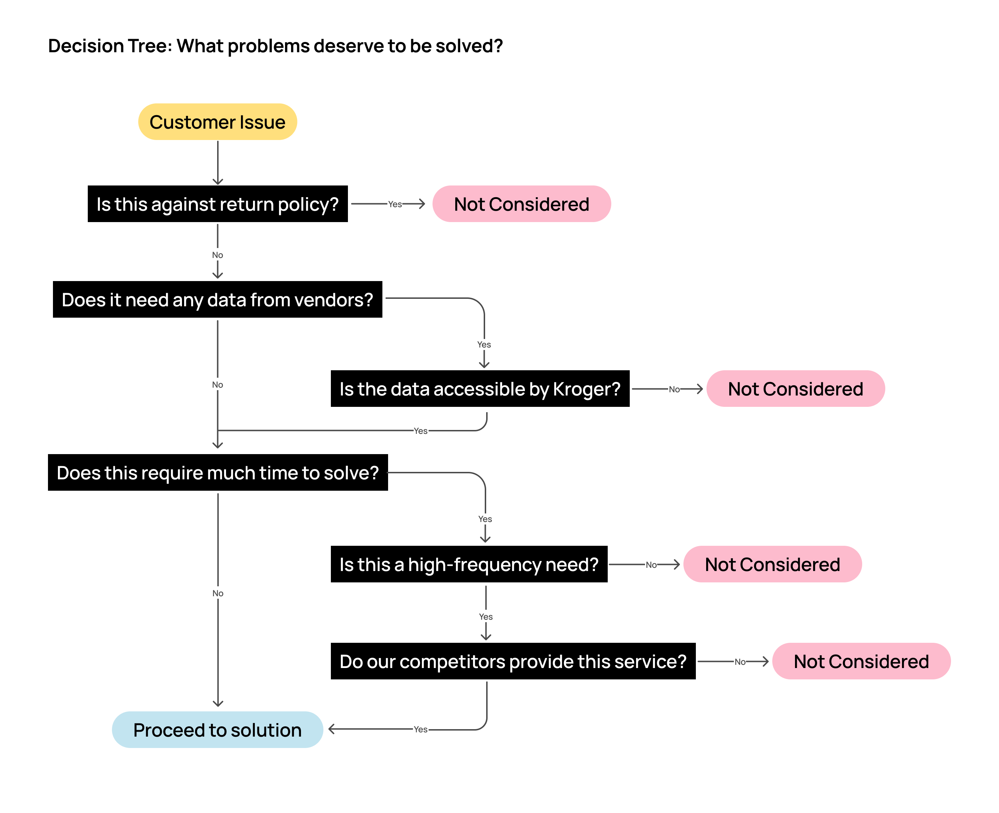
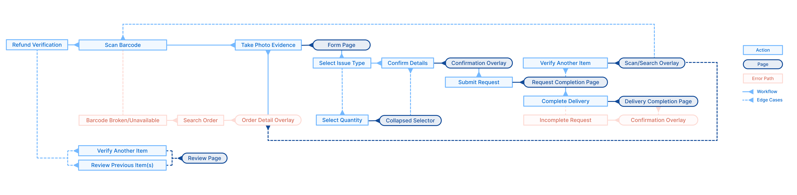
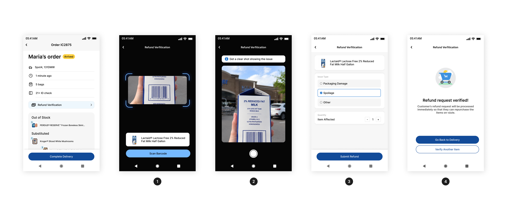
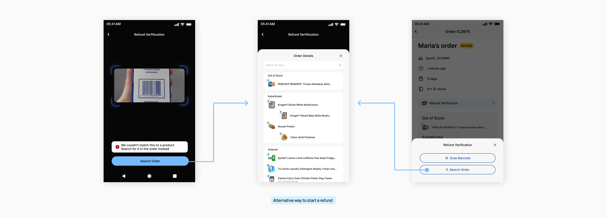
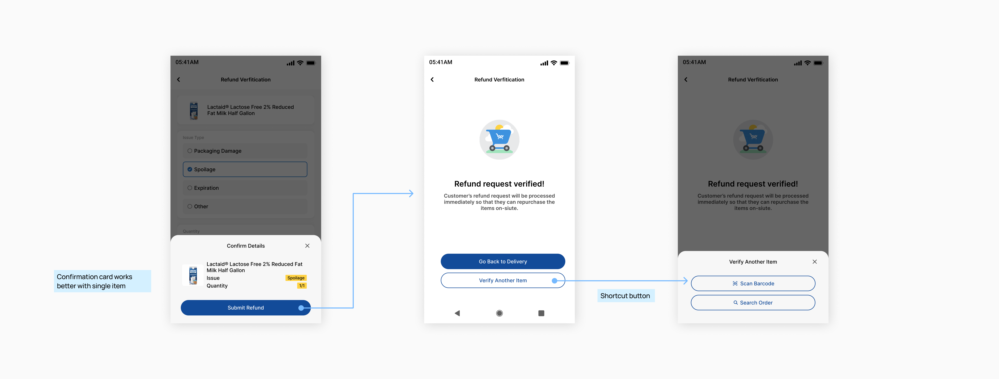
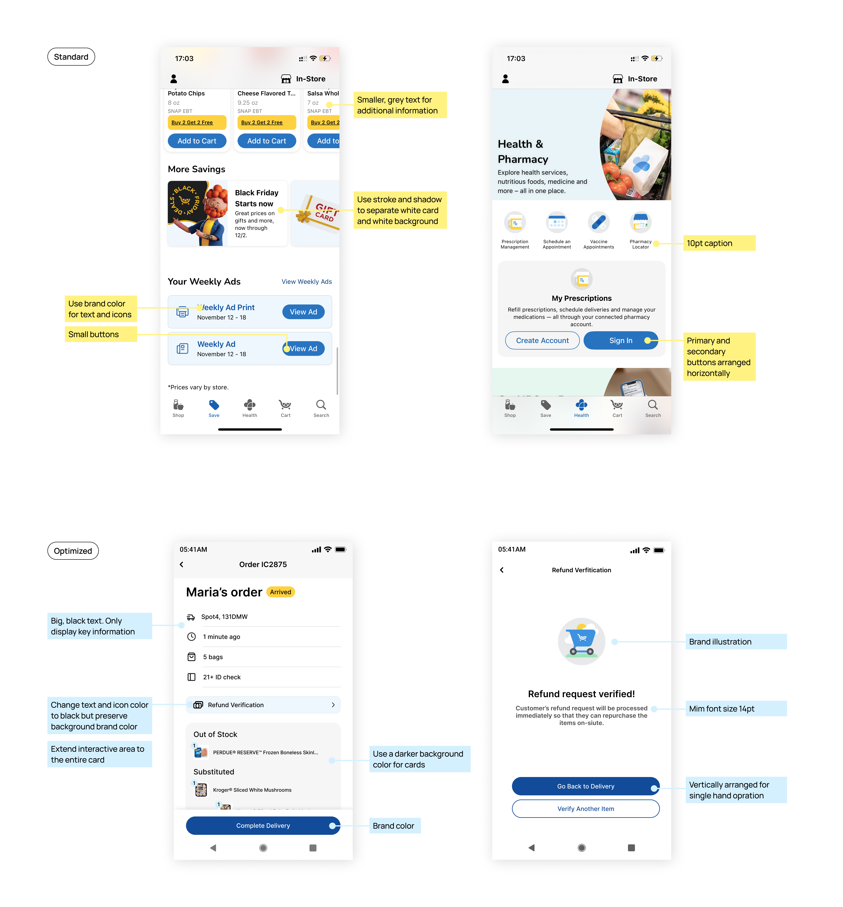
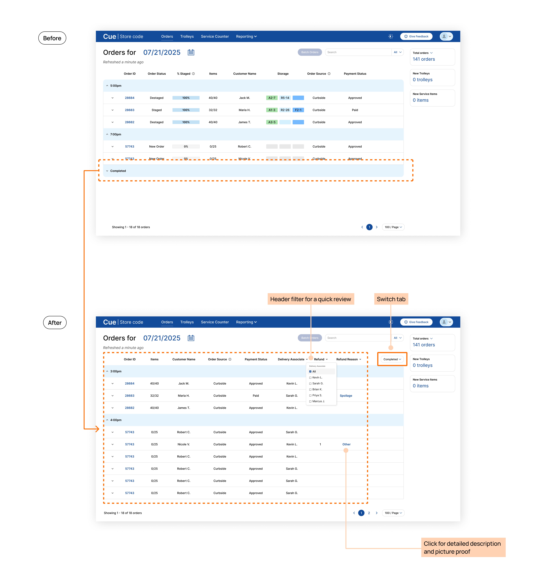

Project Overview
Problem
Curbside pickup customers were not able to resolve order issues on-site, such as a leaking milk carton, because orders were delivered by Kroger associates but picked up by vendors.
Solution
Learning that a real-time data connection between Kroger and vendor's systems wasn't business feasible, I designed an end-to-end workflow where associates can verify issues on the spot and approve refunds immediately, so customers can repurchase items right away.
The solution consists of ❶ a mobile flow considering one-handed, outdoor context, and ❷ a new view-switching tab on the desktop dashboard, allowing managers to monitor refunds and prevent misuse.
-0.0%
escalation requests
+0.0%
customer satisfaction

Jump to where you're interested in most ->
Context
Kroger partners with vendors to prepare pickup orders in 2 hours, but customer cannot resolve issues on-site
Kroger has one of the biggest pickup service in the U.S., and this new business model boosted order growth by providing faster service.
However, because one order is handled by two different companies, customers cannot resolve issues on-site.

Research
Navigating through ambiguity
This project didn't start with a neat PRD file telling me what to do.
I mapped out the blueprint with pieced information to understand the problem space, by interviewing Kroger team, digging through Reddit channels and ordering groceries by myself.

I learnt that "customers cannot resolve issues on-site" turned out to be a set of problems that should be categorized and dealt with differently.
Product Issue
e.g. leaking milk
Some items cannot be returned due to store policy
Vendor Issue
e.g. wrong item
Out of scope due to business constraints
Handoff Issue
e.g. wrong bag label
Technically feasible
Contextual inquiry in Kroger stores
2 stores
6 employees
I decided to conduct contextual inquiries in field at this point, to answer the following questions
Store associates work under time pressure. This screen hanging in the operation room reminds them how long a customer has been waiting in the parking lot.
📝 This means any new workflow should be completed in a few minutes.
Store associates deliver orders with a flatbed cart from the storage room to the outdoor parking lot.
📝 This means my design should consider high contrast and single-hand operation.

Design Strategy
Instead of overloading employees with all customer needs, I prioritized high ROI cases
As a designer, I make data-driven decisions.
Learning about the constraints in research, I realized that before diving into design solutions, I had to define the scope of the problem I solve.

👉 Although handoff issues are feasible to solve (e.g., vendor put one customer's item into another customer's bag when checking out), this happens rarely according to employees, and going back to the operation room rummaging through bags is very time consuming. As a result, I decided not to include this scenario in the final solution.
Design Solution
End-to-end verification workflow
My final design solution is an end-to-end workflow that allows employees to initiate a refund on behalf of customers, so that customers can get the verified refund immediately and repurchase.
Not just screens, I designed policies as well
To make it feasible, I also considered the following questions:
❶ What refund reasons are accepted?
❷ How does the company prevent abuse of this feature?
Mobile
Kroger associates use a Zebra device for delivery
It is an Android mobile device that has enterprise software installed. Employees rely on this device to take orders from the queue and mark any order as completed.
Defining user flow
I mapped out not just the happy path, but also edge cases and error paths that could happen.
The challenge at this step was that this is a completely new workflow with no user data for reference, so I designed the sequence based on reasoning about the usage context: associates work outdoors, hold a physical item, and need to move quickly.
👉 For example, evidence capture (taking a photo) immediately follows item identification, because this way associates only need to lift the damaged item once before they can focus on filling out the form. I validated this assumption in later user testing.

Primary workflow
Employees first scan the item barcode, then take a picture to document the issue, fill out the refund reason, and submit. This refund request will be automatically approved as it is initiated by an employee, and customers will also receive a push notification for confirmation.

Error path: when barcode not working
When the barcode is broken, users can search for the item in the order as an alternative way to proceed.
Since produce items without a barcode are a high-frequency case in the pickup scenario, I also designed a quick bottom overlay that lets employees choose between the two paths upfront.

Key decision 1: what if a customer has issues with multiple items?
I left a secondary button on the completion page for employees to start another refund faster, but I decided not to allow multiple items in one submission.
This is because
❶ it's a low-frequency action, and my priority is to keep the workflow simple since employees value efficiency,
❷ adding friction nudges employees to treat each refund case more carefully, as each submission leads to a financial result.

Key decision 2: how do I design for outdoor environment while preserving brand identity?
The on-site refund workflow happens in the parking lot, which requires the UI to ❶ be sunlight-readable, and ❷ optimize for single-handed operation.
This means I had to make product-level customizations to the design system's components. While keeping Kroger's brand colors and design style wherever possible, I designed for clear component boundaries, larger typography, higher contrast, full-width buttons, and the most concise information possible.

Desktop
Kroger managers use the desktop system to monitor orders 🖥️
After designing the mobile experience for associates, I zoomed out to see Kroger's enterprise systems as one connected ecosystem, since introducing a new workflow meant every part of that system had to account for it, not just the associate-facing side.
Introducing a separate view for completed orders
User needs
Store managers want to quickly review refunded orders to make sure no employee is abusing this process for improper profit.
Key design
- Move completed orders from the folded table section to another tab
- Allow managers to filter out refunded orders and sort by employees
- Cut off redundant information in the table for less cognitive load
Outcome: Managers can answer "is there any abnormal refund activity happening today" at a glance.

Next Project
Redesigning outage map to provide more clarity in reporting workflows @AES